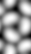
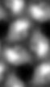

Simulating an AFM experiment
If the molecular structure of a specimen is known, a topographic map can be calculated through a simulation of AFM imaging.
The elastic force on an AFM tip is calculated as:
F = kt*dz = kb*dV/d
where
- kt is the cantilever spring constant, typically 0.01 - 0.1 N/m.
- dz is the tip displacement due to specimen interaction.
- kb is the bulk modulus of the specimen, typically 1e9 N/m2.
- dV is the volume of the specimen displaced by the tip. This volume is here approximated as the density overlap volume.
- d is the specimen thickness in angstrom.
The tip is positioned at each point (x,y,z) in the density map and the overlap volume calculated (i.e., a type of convolution). This tip position corresponds to a zero displacement. The correct tip position is found by shifting the tip upwards (in the z-direction) until the displacement and elastic forces are approximately equal. The tip displacement is refined by interpolation and the force calculated. The force map is returned in place of the original density map.
Forces are calculated in piconewton. The origin of the tip density is taken as nx/2, ny/2, 0.
Example: Simulation of an AFM experiment on a bacteriorhodopsin 2D crystal
First generate a map from an atomic coordinate file:
bgex -v 7 -coor 1qhj_two_trim_uc.pdb -sam 1 -ori 0,0,0 -size 62,108,100 -wrap -resol 6 br_uc_6a.map
Then run the simulation with the appropriate parameters:
bafm -v 7 -sam 1 -tip 10,60,60,60 -spring 0.02 -modulus 1e9 -thick 60 -Post br_afm_6a_t10_k1e9.ps -Force br_afm_6a_t10_k1e9.map br_uc_6a.map br_afm_6a_t10_k1e9.pif
 
Left: The simulated height map at 10 pN. Right: An actual AFM height map of the cytoplasmic surface

The average force curve for the simulation